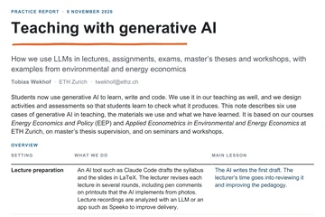

Tobias Wekhof
Welcome! I’m a postdoctoral researcher in environmental economics and sustainable finance at the Geneva Finance Research Institute, University of Geneva, and a lecturer at ETH Zurich.
- Topics
- Environmental Economics, Sustainable Finance, Applied Microeconomics
- Methods
- Econometrics, Field and Survey Experiments, Natural Language Processing

Practice report · November 2026 Teaching with generative AI How we use LLMs in lectures, assignments, exams, master’s theses and workshops, with examples from environmental and energy economics. ETH Zurich, PDF, 9 pages.